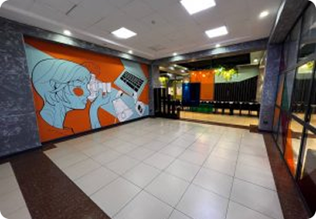
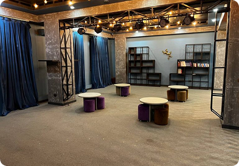

Oʻzbekistonda Milliy malaka tizimini rivojlantirish instituti Oʻzbekiston Respublikasi Prezidentining
2024-yil 30-sentyabrda qabul qilingan
“O‘zbekiston Respublikasi milliy malaka tizimini yanada takomillashtirish chora-eventsi to‘g‘risida”gi
PQ-345-sonli Qaroriga muvofiq tashkil etildi.
Shuningdek, Vazirlar Mahkamasining 2025-yil 17-iyunda qabul qilingan
“O‘zbekiston Respublikasi milliy malaka tizimini tartibga solishga qaratilgan
ayrim normativ-huquqiy hujjatlarni tasdiqlash to‘g‘risida”gi VMQ-369-sonli Qaroriga ko‘ra O‘zbekiston
Respublikasi Prezidenti Administratsiyasi
huzuridagi Ta’lim sifatini ta’minlash milliy agentligining Milliy malaka tizimini rivojlantirish instituti
Respublika kengashining ishchi organi hisoblanadi
va Milliy malaka tizimini muvofiqlashtiruvchi regulator vazifasini bajaradi.
Yangicha yondashuvlar va zamonaviy texnologiyalardan foydalanish.
ShaffoflikBarcha jarayonlarda ochiqlik hamda adolatli yondashuv.
Xalqaro hamkorlikDunyo tajribasini milliy amaliyotga joriy etish.
Salohiyatni oshirishKasbiy rivojlanishni taʼminlash.
Jamoaviy ishBirgalikda natijaga erishish.